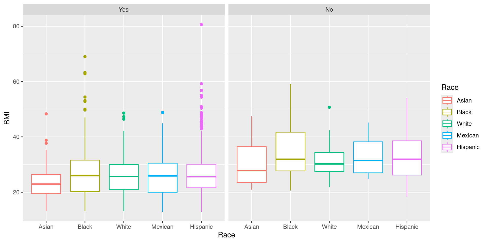
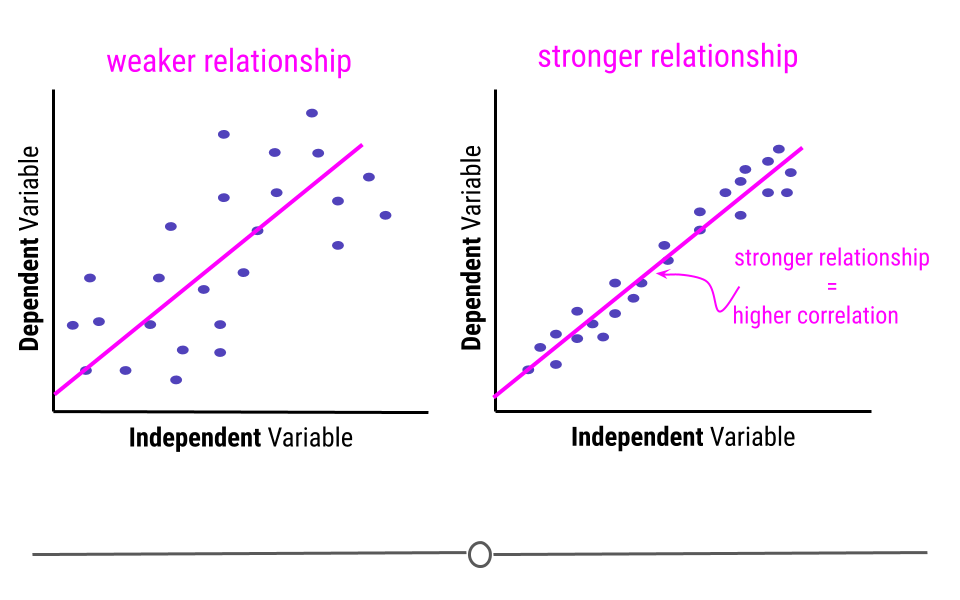
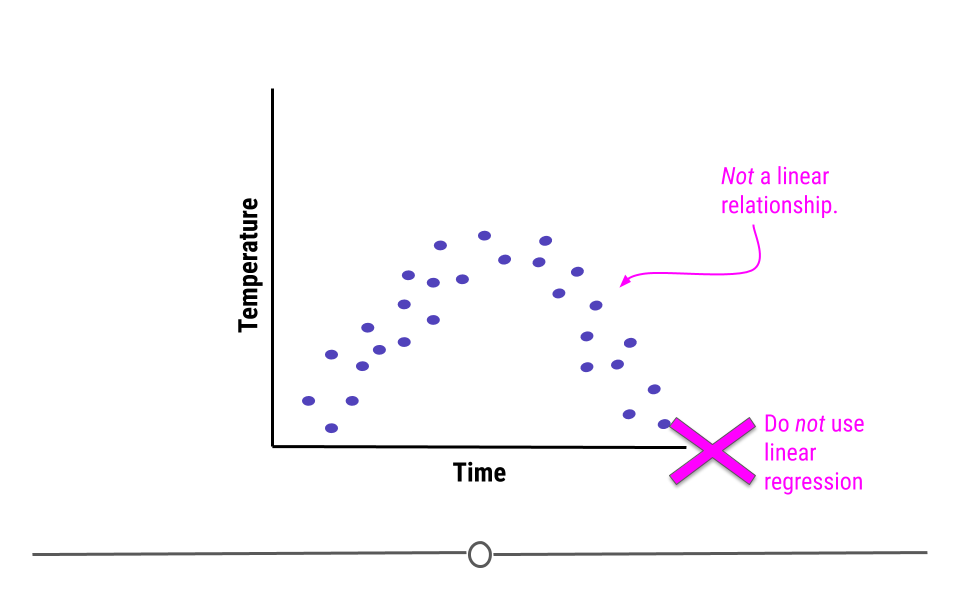
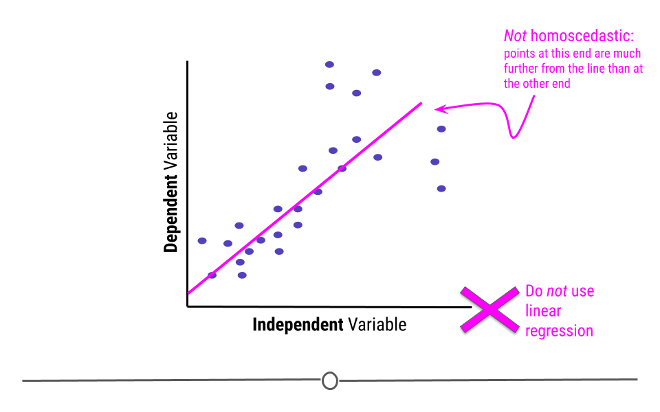
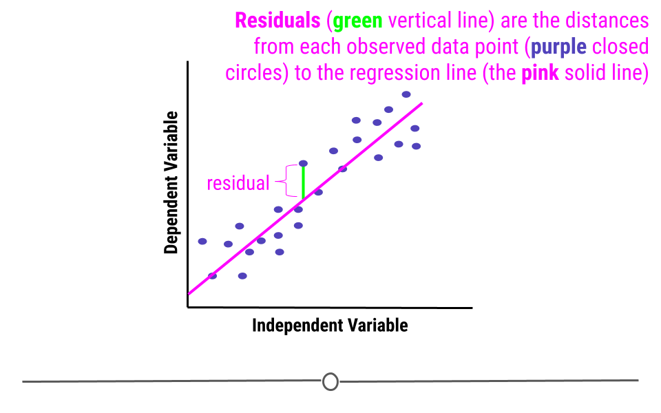
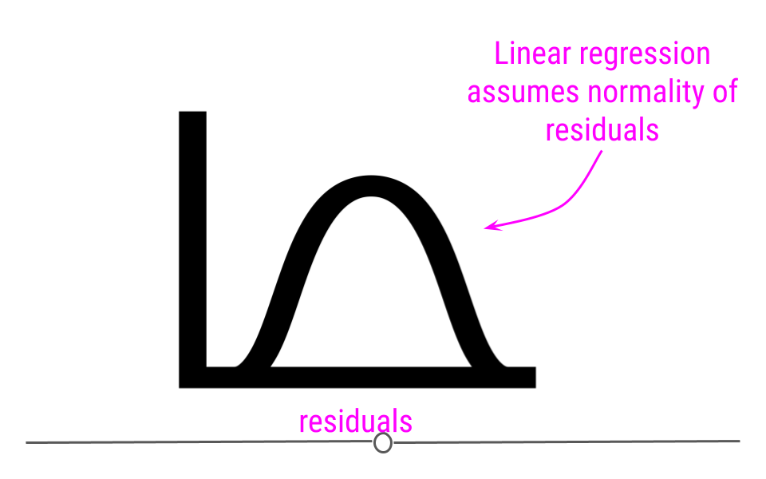
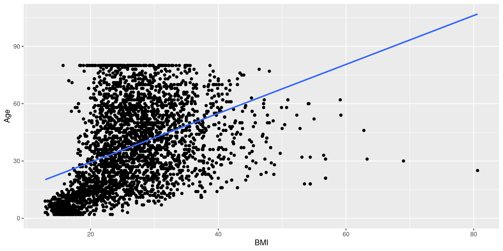
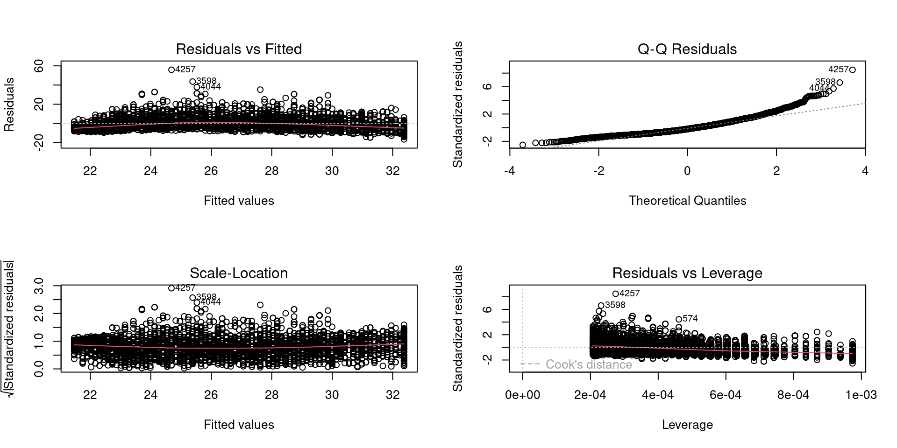

Inferential statistics
Statistical workshop with R
20 Oct 2023
PPDAC: A for Analysis
Statistical testing
library installation
- tidyverse
- tibble
- tribble
- readr
- tidyr
- dplyr
- …
- tidymodels
- infer
calling library
The NHANES data
| Variable | Definition |
|---|---|
| id | A unique sample identifier |
| Gender | Gender (sex) of study participant coded as male or female |
| Age | Age in years at screening of study participant. Note: Subjects 80 years or older were recorded as 80. |
| Race | Reported race of study participant, including non-Hispanic Asian category: Mexican, Hispanic, White, Black, Asian, or Other. Not availale for 2009-10. |
| Education | Educational level of study participant Reported for participants aged 20 years or older. One of 8thGrade, 9-11thGrade, HighSchool, SomeCollege, or CollegeGrad. |
| MaritalStatus | Marital status of study participant. Reported for participants aged 20 years or older. One of Married, Widowed, Divorced, Separated, NeverMarried, or LivePartner (living with partner). |
| RelationshipStatus | Simplification of MaritalStatus, coded as Committed if MaritalStatus is Married or LivePartner, and Single otherwise. |
| Insured | Indicates whether the individual is covered by health insurance. |
| Income | Numerical version of HHIncome derived from the middle income in each category |
| Poverty | A ratio of family income to poverty guidelines. Smaller numbers indicate more poverty |
| HomeRooms | How many rooms are in home of study participant (counting kitchen but not bathroom). 13 rooms = 13 or more rooms. |
| HomeOwn | One of Home, Rent, or Other indicating whether the home of study participant or someone in their family is owned, rented or occupied by some other arrangement. |
| Work | Indicates whether the individual is current working or not. |
| Weight | Weight in kg |
| Height | Standing height in cm. Reported for participants aged 2 years or older. |
| BMI | Body mass index (weight/height2 in kg/m2). Reported for participants aged 2 years or older. |
| Pulse | 60 second pulse rate |
| BPSys | Combined systolic blood pressure reading, following the procedure outlined for BPXSAR. |
| BPDia | Combined diastolic blood pressure reading, following the procedure outlined for BPXDAR. |
| Testosterone | Testerone total (ng/dL). Reported for participants aged 6 years or older. Not available for 2009-2010. |
| HDLChol | Direct HDL cholesterol in mmol/L. Reported for participants aged 6 years or older. |
| TotChol | Total HDL cholesterol in mmol/L. Reported for participants aged 6 years or older. |
| Diabetes | Study participant told by a doctor or health professional that they have diabetes. Reported for participants aged 1 year or older as Yes or No. |
| DiabetesAge | Age of study participant when first told they had diabetes. Reported for participants aged 1 year or older. |
| nPregnancies | How many times participant has been pregnant. Reported for female participants aged 20 years or older. |
| nBabies | How many of participants deliveries resulted in live births. Reported for female participants aged 20 years or older. |
| SleepHrsNight | Self-reported number of hours study participant usually gets at night on weekdays or workdays. Reported for participants aged 16 years and older. |
| PhysActive | Participant does moderate or vigorous-intensity sports, fitness or recreational activities (Yes or No). Reported for participants 12 years or older. |
| PhysActiveDays | Number of days in a typical week that participant does moderate or vigorous-intensity activity. Reported for participants 12 years or older. |
| AlcoholDay | Average number of drinks consumed on days that participant drank alcoholic beverages. Reported for participants aged 18 years or older. |
| AlcoholYear | Estimated number of days over the past year that participant drank alcoholic beverages. Reported for participants aged 18 years or older. |
| SmokingStatus | Smoking status: Current Former or Never. |
import data to tibbles
# A tibble: 5,000 × 32
id Gender Age Race Education MaritalStatus RelationshipStatus Insured
<dbl> <chr> <dbl> <chr> <chr> <chr> <chr> <chr>
1 62163 male 14 Asian <NA> <NA> <NA> Yes
2 62172 female 43 Black High Sch… NeverMarried Single Yes
3 62174 male 80 White College … Married Committed Yes
4 62174 male 80 White College … Married Committed Yes
5 62175 male 5 White <NA> <NA> <NA> Yes
6 62176 female 34 White College … Married Committed Yes
7 62178 male 80 White High Sch… Widowed Single Yes
8 62180 male 35 White College … Married Committed Yes
9 62186 female 17 Black <NA> <NA> <NA> Yes
10 62190 female 15 Mexican <NA> <NA> <NA> Yes
# ℹ 4,990 more rows
# ℹ 24 more variables: Income <dbl>, Poverty <dbl>, HomeRooms <dbl>,
# HomeOwn <chr>, Work <chr>, Weight <dbl>, Height <dbl>, BMI <dbl>,
# Pulse <dbl>, BPSys <dbl>, BPDia <dbl>, Testosterone <dbl>, HDLChol <dbl>,
# TotChol <dbl>, Diabetes <chr>, DiabetesAge <dbl>, nPregnancies <dbl>,
# nBabies <dbl>, SleepHrsNight <dbl>, PhysActive <chr>, PhysActiveDays <dbl>,
# AlcoholDay <dbl>, AlcoholYear <dbl>, SmokingStatus <chr>view tibbles
normality test: Shapiro-Wilk test of normality
\[ H_0 : data distribution = normal distribution \] \[ H_1 : data distribution \neq normal distribution \]
Bartlett Test of Homogeneity of Variances
\[ H_0 : Var_{diabetes} = Var_{nondiabetes} \] \[ H_1 : Var_{diabetes} \neq Var_{nondiabetes} \]
one sample T Test
\[ H_0 : \mu_{BMI_{diabetic}} = 25 \] \[ H_1 : \mu_{BMI_{diabetic}} \neq 25 \]
one sample T Test: inferiority test
\[ H_0 : \mu_{BMI_{diabetic}} \geq 25 \] \[ H_1 : \mu_{BMI_{diabetic}} < 25 \]
one sample T Test: superiority test
\[ H_0 : \mu_{BMI_{diabetic}} \leq 25 \] \[ H_1 : \mu_{BMI_{diabetic}} > 25 \]
two sample T Test: equal variance, two-tail
\[ H_0 : \mu_{BMI_{diabetic}} = \mu_{BMI_{nondiabetic}} \] \[ H_1 : \mu_{BMI_{diabetic}} \neq \mu_{BMI_{nondiabetic}} \]
two sample T Test: not equal variance, two-tail
\[ H_0 : \mu_{BMI_{diabetic}} = \mu_{BMI_{nondiabetic}} \] \[ H_1 : \mu_{BMI_{diabetic}} \neq \mu_{BMI_{nondiabetic}} \]
two sample T Test: not equal variance, one-tail
\[ H_0 : \mu_{BMI_{diabetic}} \leq \mu_{BMI_{nondiabetic}} \] \[ H_1 : \mu_{BMI_{diabetic}} > \mu_{BMI_{nondiabetic}} \]
Wilcoxon rank-sum test (a.k.a. Mann-Whitney U test)
ANOVA
comparing BMI among Race
preparing data
nhaov <- nh %>%
filter(Race!="Other" & !is.na(Diabetes) & !is.na(BMI)) %>%
mutate(
Race = factor(
Race,
labels = c("Asian", "Black", "White", "Mexican", "Hispanic")
),
Diabetes = factor(
Diabetes,
labels = c("Yes", "No")
)
)
nhaov# A tibble: 4,681 × 32
id Gender Age Race Education MaritalStatus RelationshipStatus Insured
<dbl> <chr> <dbl> <fct> <chr> <chr> <chr> <chr>
1 62163 male 14 Asian <NA> <NA> <NA> Yes
2 62172 female 43 Black High Sch… NeverMarried Single Yes
3 62174 male 80 Hispan… College … Married Committed Yes
4 62174 male 80 Hispan… College … Married Committed Yes
5 62175 male 5 Hispan… <NA> <NA> <NA> Yes
6 62176 female 34 Hispan… College … Married Committed Yes
7 62178 male 80 Hispan… High Sch… Widowed Single Yes
8 62180 male 35 Hispan… College … Married Committed Yes
9 62186 female 17 Black <NA> <NA> <NA> Yes
10 62190 female 15 Mexican <NA> <NA> <NA> Yes
# ℹ 4,671 more rows
# ℹ 24 more variables: Income <dbl>, Poverty <dbl>, HomeRooms <dbl>,
# HomeOwn <chr>, Work <chr>, Weight <dbl>, Height <dbl>, BMI <dbl>,
# Pulse <dbl>, BPSys <dbl>, BPDia <dbl>, Testosterone <dbl>, HDLChol <dbl>,
# TotChol <dbl>, Diabetes <fct>, DiabetesAge <dbl>, nPregnancies <dbl>,
# nBabies <dbl>, SleepHrsNight <dbl>, PhysActive <chr>, PhysActiveDays <dbl>,
# AlcoholDay <dbl>, AlcoholYear <dbl>, SmokingStatus <chr>box plot
summarize by group
# A tibble: 10 × 3
Race Diabetes mean
<fct> <fct> <dbl>
1 Asian Yes 23.1
2 Asian No 29.6
3 Black Yes 26.7
4 Black No 34.2
5 White Yes 25.5
6 White No 31.2
7 Mexican Yes 25.7
8 Mexican No 33.1
9 Hispanic Yes 26.2
10 Hispanic No 32.4Analysis of Varience
\[ H_0 : \mu_{BMI_{Asian}} = \mu_{BMI_{Black}} = \mu_{BMI_{White}} = \mu_{BMI_{Mexican}} = \mu_{BMI_{Hispanic}} \]
Post-hoc
Tukey multiple comparisons of means
95% family-wise confidence level
Fit: aov(formula = BMI ~ Race, data = .)
$Race
diff lwr upr p adj
Black-Asian 3.9219759 2.4796138 5.36433804 0.0000000
White-Asian 2.3466776 0.7536502 3.93970506 0.0005662
Mexican-Asian 2.4801524 0.9783435 3.98196129 0.0000662
Hispanic-Asian 2.9519888 1.7168031 4.18717442 0.0000000
White-Black -1.5752983 -2.9248493 -0.22574724 0.0126602
Mexican-Black -1.4418235 -2.6823805 -0.20126654 0.0132408
Hispanic-Black -0.9699871 -1.8695622 -0.07041211 0.0270928
Mexican-White 0.1334748 -1.2794334 1.54638289 0.9990295
Hispanic-White 0.6053111 -0.5201057 1.73072795 0.5836171
Hispanic-Mexican 0.4718364 -0.5202607 1.46393347 0.6925947tidy Post-hoc
# A tibble: 10 × 7
term contrast null.value estimate conf.low conf.high adj.p.value
<chr> <chr> <dbl> <dbl> <dbl> <dbl> <dbl>
1 Race Black-Asian 0 3.92 2.48 5.36 0.0000000374
2 Race White-Asian 0 2.35 0.754 3.94 0.000566
3 Race Mexican-Asian 0 2.48 0.978 3.98 0.0000662
4 Race Hispanic-Asian 0 2.95 1.72 4.19 0.0000000382
5 Race White-Black 0 -1.58 -2.92 -0.226 0.0127
6 Race Mexican-Black 0 -1.44 -2.68 -0.201 0.0132
7 Race Hispanic-Black 0 -0.970 -1.87 -0.0704 0.0271
8 Race Mexican-White 0 0.133 -1.28 1.55 0.999
9 Race Hispanic-White 0 0.605 -0.520 1.73 0.584
10 Race Hispanic-Mexican 0 0.472 -0.520 1.46 0.693 simple linear regression
Model
\[ BMI = \beta_0 + \beta_1 Age \] 
Assumptions
- Non-linearity
- Heteroscedasticity
- Outlier values
- Normality of residuals
Non-linearity
Heteroscedasticity
Normality of residuals
 
plot
Fitting
Call:
lm(formula = BMI ~ Age, data = .)
Residuals:
Min 1Q Median 3Q Max
-16.675 -4.742 -1.277 3.419 55.915
Coefficients:
Estimate Std. Error t value Pr(>|t|)
(Intercept) 21.189645 0.187625 112.94 <2e-16 ***
Age 0.139813 0.004307 32.46 <2e-16 ***
---
Signif. codes: 0 '***' 0.001 '**' 0.01 '*' 0.05 '.' 0.1 ' ' 1
Residual standard error: 6.596 on 4832 degrees of freedom
(166 observations deleted due to missingness)
Multiple R-squared: 0.179, Adjusted R-squared: 0.1789
F-statistic: 1054 on 1 and 4832 DF, p-value: < 2.2e-16Model Diagnostics
References
- https://sparkbyexamples.com/r-programming/select-rows-in-r/
- https://4va.github.io/biodatasci/
- https://bioconnector.github.io/

Statistical workshop with R